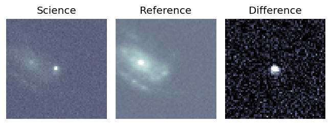
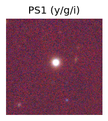
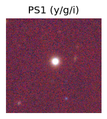
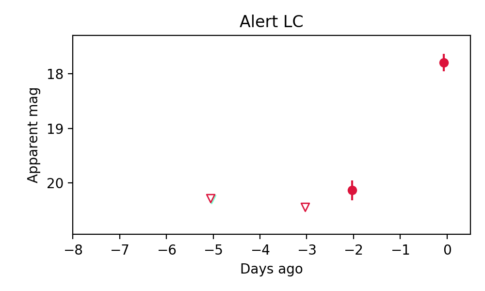
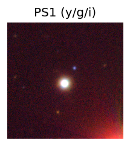
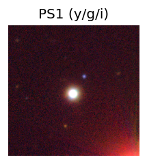
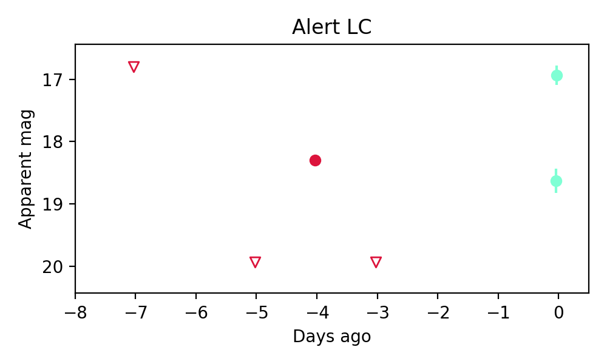

Candidate List 20251205Previous Day Next Day
Section 1: New Sources (age<1d) Section 2: Old (1-5d) sources observed last nightplaceholder
Section 1: New Afterglow/FBOT Cands Last Night (0)
Section 2: Older Sources Observed Last Night (6)
0. ZTF25acffkdr (Afterglow?) [Back to Top] [Share] [Trigger Swift] [Fritz] [Lasair]RA, Dec: 150.17566, 15.28322 10h 0m42.16s, 15d16m59.59sGalactic (l, b): 220.6602, 48.70236 WARNING: 2.92 deg from ecliptic plane ext(g-r) = 0.034
TESS: Sectors [45 46 72]
SDSS (10 arcsec):Found SDSS phot-z: z=0.04; peak abs mag = -18.65
PS1: 0 sources in 3 arcsec
LegacySurvey: 1 sources in 3 arcsec Closest: d = 1.38 arcsec, 47.6 deg (east of north) photoz=0.01 (68% bounds 0.01, 0.02), type=PSF peak abs mag = -15.84 (68% bounds -14.96, -17.13)

Extinction-corrected gr color:
From alerts: -0.09 +/- 0.1 mag
Consistent with synchrotron, g-r>0!
Rise Rate:
g: 1.28 mag/day
r: 0.11 mag/day
i: -99 mag/day
Fade Rate:
g: -99 mag/day
r: -99 mag/day
i: -99 mag/day
1. ZTF25acffprp (FBOT?) [Back to Top] [Share] [Trigger Swift] [Fritz] [Lasair]RA, Dec: 158.4288, 39.40399 10h33m42.91s, 39d24m14.37sGalactic (l, b): 180.8052, 58.94371 ext(g-r) = 0.013


TESS: Sectors [21 48]
SDSS (10 arcsec):Found SDSS phot-z: z=0.11; peak abs mag = -20.25
PS1: 0 sources in 3 arcsec
LegacySurvey: 1 sources in 3 arcsec Closest: d = 0.59 arcsec, 251.6 deg (east of north) photoz=0.09 (68% bounds 0.06, 0.13), type=SER peak abs mag = -19.64 (68% bounds -18.91, -20.63)

Extinction-corrected gr color:
From alerts: -0.16 +/- 0.09 mag
Rise Rate:
g: 0.26 mag/day
r: 0.24 mag/day
i: -99 mag/day
Fade Rate:
g: -99 mag/day
r: -99 mag/day
i: -99 mag/day
2. ZTF25acfqnpb (Afterglow?) [Back to Top] [Share] [Trigger Swift] [Fritz] [Lasair]RA, Dec: 126.66887, -12.90929 8h26m40.53s, -12d-54m-33.45sGalactic (l, b): 235.91684, 14.37887 ext(g-r) = 0.049

TESS: Sectors [ 7 8 34 61 88 99 112]
PS1: 1 source in 3 arcsec Closest: d = 7.93 arcsec photoz=0.63+/-0.15 peak abs mag = -26.86
LegacySurvey: 0 sources in 3 arcsec

Extinction-corrected gr color:
From alerts: -0.39 +/- 0.06 mag
Rise Rate:
g: 4.12 mag/day
r: 2.29 mag/day
i: -99 mag/day
Fade Rate:
g: -99 mag/day
r: 0.25 mag/day
i: -99 mag/day
3. ZTF25acfrryu (Afterglow?) [Back to Top] [Share] [Trigger Swift] [Fritz] [Lasair]RA, Dec: 338.54569, 68.59653 22h34m10.97s, 68d35m47.52sGalactic (l, b): 110.9103, 8.99076 ext(g-r) = 0.74

TESS: Sectors [17 24 57 58 77 78 84 85]
SDSS (10 arcsec):Found SDSS phot-z: z=0.87; peak abs mag = -28.77
PS1: 0 sources in 3 arcsec
LegacySurvey: 0 sources in 3 arcsec

Extinction-corrected gr color:
From alerts: -0.24 +/- 0.14 mag
Rise Rate:
g: 0.98 mag/day
r: 0.74 mag/day
i: -99 mag/day
Fade Rate:
g: 0.37 mag/day
r: 0.28 mag/day
i: -99 mag/day
4. ZTF25acfwjal (FBOT?) [Back to Top] [Share] [Trigger Swift] [Fritz] [Lasair]RA, Dec: 201.34776, 2.94538 13h25m23.46s, 2d56m43.37sGalactic (l, b): 322.94783, 64.48953 ext(g-r) = 0.028 

TESS: Sectors [ 23 46 50 91 115]
PS1: 0 sources in 3 arcsec
LegacySurvey: 1 sources in 3 arcsec Closest: d = 2.32 arcsec, 333.8 deg (east of north) photoz=0.1 (68% bounds 0.03, 0.12), type=PSF peak abs mag = -20.63 (68% bounds -17.85, -21.08)

Rise Rate:
g: -99 mag/day
r: 1.2 mag/day
i: -99 mag/day
Fade Rate:
g: -99 mag/day
r: -99 mag/day
i: -99 mag/day
5. ZTF25acfwlsr (Afterglow?) [Back to Top] [Share] [Trigger Swift] [Fritz] [Lasair]RA, Dec: 193.28716, 0.4569 12h53m8.92s, 0d27m24.85sGalactic (l, b): 303.88463, 63.32549 ext(g-r) = 0.025 

TESS: Sectors [ 46 91 115]
PS1: 0 sources in 3 arcsec
LegacySurvey: 1 sources in 3 arcsec Closest: d = 1.75 arcsec, 174.2 deg (east of north) photoz=0.02 (68% bounds 0.01, 0.03), type=PSF peak abs mag = -17.84 (68% bounds -14.91, -18.51)

Rise Rate:
g: -99 mag/day
r: 1.65 mag/day
i: -99 mag/day
Fade Rate:
g: -99 mag/day
r: 1.64 mag/day
i: -99 mag/day